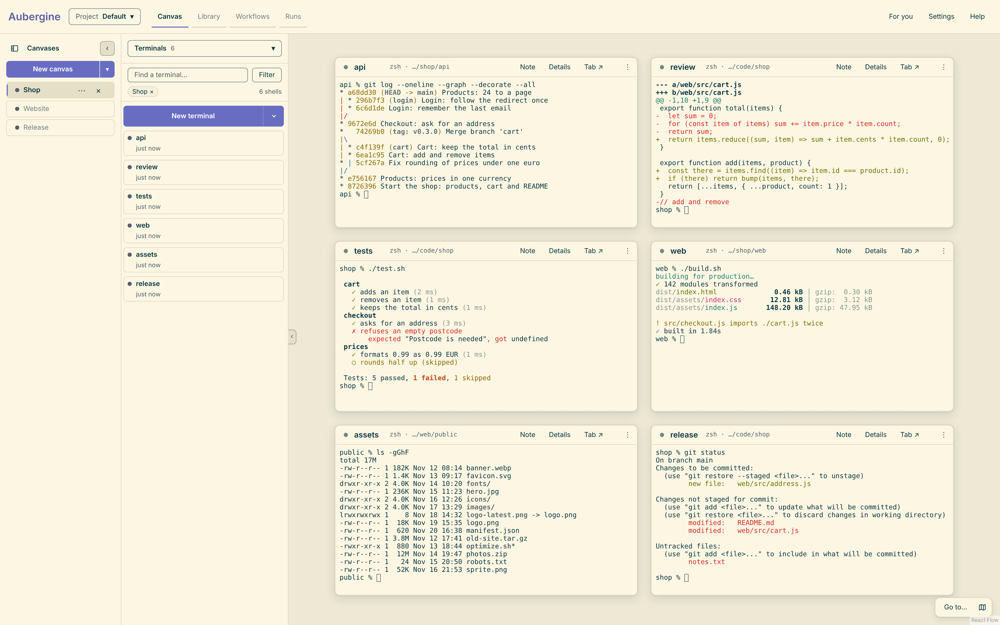

Aubergine 自带演示的真实截图：一张画布上的六个终端，以及在等你的那一个。
重新思考终端管理
还是你已经在用的终端，补上它们一直缺的东西：一个可以并排摆开的地方、一份记忆，以及在需要你时通知你的办法。
提升你的效率
多个智能体同时工作，各自在自己的终端里。你只回应正在等你的那个，其余的继续运行。
更好的开发体验
每个终端都有名字、颜色、笔记和它在画布上的位置。关掉浏览器或重启 Aubergine，它们都还在。
无需迁移
你的 shell、你的工具、你的智能体和模型，一切照旧。Aubergine 只是在它们周围加上画布，自己没有模型。
它是什么样子
以下是 Aubergine 自带演示的真实截图：用的是替身智能体，不是真的智能体。
所有终端都在一张画布上
想开多少就开多少，并排摆放，每个终端在可见时都是实时的。

在等你的那个一眼就能看到
当某个智能体需要你时，隔着整张画布也能看到，按 W 就能过去。

单独打开一个终端
任何终端都可以在单独的浏览器标签页中打开，是同一个终端，不是副本。

十种配色主题
页面有十种配色主题，四种浅色，六种深色。每种类型各选一个，页面就会显示为浅色、深色，或跟随系统。单个颜色可以在设置文件中手动设置。

Light 
Solarized light 
Gruvbox light 
Nord 
Dracula 
Gruvbox dark

每个终端都可以有自己的主题
在终端菜单中选择 Theme…，就能用十种主题中的任意一种显示它，无论页面用的是哪种主题。其他终端则跟随你为终端设置的默认主题，或跟随页面。

在 Settings 中选择
Settings → Appearance 会用一张小图展示每个主题的颜色。更改会立即应用到页面和所有终端，你在任何浏览器中打开都一致。

自带你的智能体
Aubergine 运行的是普通终端。它不调用模型，不持有密钥，也没有账号：你已经在用的命令行智能体，以你的身份登录，带着你为它们选的模型，在它的终端里运行。Aubergine 为智能体自动做的事，目前是为 Claude Code 构建的；其他任何智能体都可以通过 aubergine 命令告诉它同样的事。
Claude Code
从 New terminal（新建终端）菜单启动它，它会自己报告何时在工作、在等你或已完成；Aubergine 可以恢复它的对话，并显示它是如何配置的。
Codex 与 ChatGPT
Codex 像任何程序一样在终端里运行；只要它的指令告诉它，它就会通过
aubergine命令报告。浏览器里的 ChatGPT 不是终端程序。任何其他命令行智能体，或普通 shell
每个终端都有
aubergine命令，aubergine guide --snippet会打印五行，供你放进智能体自己的指令里。
还做好了什么
以下这些今天都能在你的电脑上运行。
一张终端画布
平移、缩放、排列真正的终端，点一下就能输入；把一个终端停放起来稍后再拿回来，或在浏览器标签页中单独打开它，旁边是它的详情和笔记。
看清谁在等
每个终端都显示忙碌、空闲或在等你；“For you”列表和“next waiting”直接带你去需要人处理的地方。
队列与定时计划
任务写一次，让空闲的智能体去接；或者安排它在你选定的日子、每天的某个时间运行。
工作副本
给每个智能体一份仓库副本，放在它自己的分支上，两个智能体永远不会编辑同一批文件。
项目
一个服务器，多个控制室：每个项目有自己的画布、队列、定时计划和规则，并可以保存为文件或模板。
工作流与审批
给智能体一系列要遵循的步骤，在等待人的步骤处停下，并在一块看板上查看所有正在进行的运行。
终端之间的消息
让智能体彼此对话，带有署名的发送者、限额和暂停，每张画布默认关闭。
API 与 MCP 服务器
带有限定权限令牌的本地 HTTP API、一个有类型的客户端，以及一个只列出凭据可用工具的 MCP 服务器。
命令行
aubergine命令可以从这台机器上的任何终端启动终端、把任务加入队列、设置定时计划、读取看板和审批运行。回顾与历史
查看你不在时发生了什么变化，搜索终端输出，并从命令面板重新打开过去的对话。
你的终端始终属于你
仅限本地
服务器监听 127.0.0.1，并检查每个请求的 Host 和 Origin；从其他设备使用默认关闭，直到你自己设置。
终端比应用活得更久
每个终端都是一个 tmux 会话：关掉浏览器或重启 Aubergine，你的工作照常运行。
没有模型，没有密钥
Aubergine 不挑选也不调用模型，也不持有任何模型的密钥；模型由你的智能体自带。
由你决定
令牌有权限范围，智能体写的东西等你审阅，审批由人来做。
Aubergine 是什么？
一个在本地运行、基于浏览器的终端会话画布。每个终端都是一个可以排列和使用的节点，所以你可以同时运行多个编程智能体，并看清哪一个在等你。
Aubergine 会把我的终端或代码发送到别处吗？
不会。一切都在你自己的电脑上运行。服务器只监听 127.0.0.1，并检查每个请求的 Host 和 Origin。
运行 Aubergine 需要什么？
装有 tmux 3.2 或更新版本以及 Node.js 22 或更新版本的 macOS；安装脚本还需要 pnpm。在 Linux 上只在容器里运行过。在 Windows 上只能在 WSL 2 里运行，而这还没有试过：见Windows 指南。
如果我自己在终端里启动 Claude Code 会怎样？
它像任何程序一样工作：你照常向它输入。但只有当 Aubergine 自己启动了智能体时（New terminal，然后选 Claude Code），它才知道那里有一个智能体，因为它会加上几个小钩子来报告智能体在做什么。手动启动时，终端只会显示正忙于运行 claude：它提问时不会标为 waiting for you，你在那里启动工作流时也不会替它输入任何内容。你可以自己让它运行 aubergine workflow status，这在终端内仍然有效；或者改从 New terminal 菜单启动智能体。
Aubergine 免费吗？
免费。它采用 MIT 许可证，免费开源，源码在 GitHub 上。
计划中的内容
多人协作、云端智能体、审批模式等都在计划中，尚未构建。查看路线图。
五分钟上手
你需要 macOS，以及 tmux 3.2 或更高版本和 Node.js 22 或更高版本。brew install tmux node 可以一次装好两者。
安装
npm install -g @meatgarden/aubergine或者使用安装脚本，它会用 pnpm 从源码构建。
启动并打开浏览器
aubergine start --open它会启动服务器并打开已登录的浏览器。
跟着导览走一遍
在空画布上点击 Show me around（带我看看）。它会创建一张由替身智能体组成的 Demo 画布，用八个简短步骤带你走一遍；
aubergine demo --remove会把它移除。
安装脚本只改动 ~/.aubergine 和一个名为 aubergine 的链接。它从不使用 sudo，也从不编辑你的 shell 启动文件。